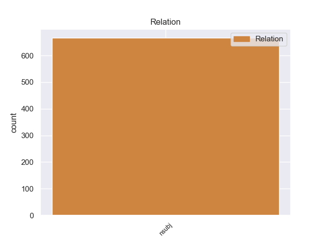
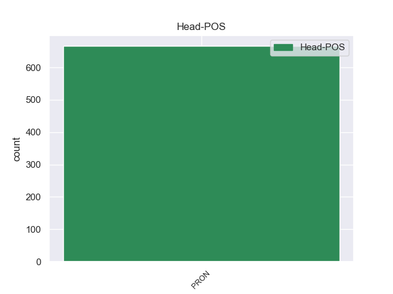
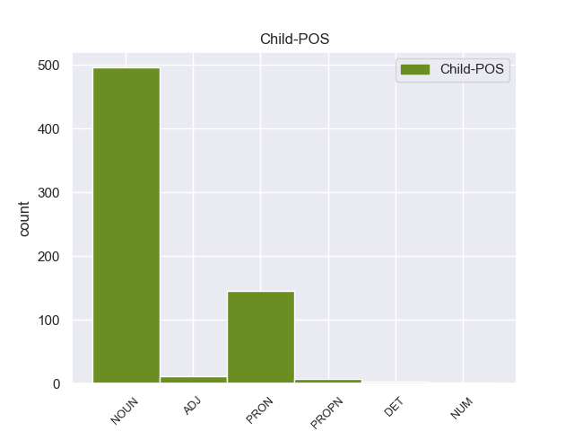

Distribution of features within this leaf



Agreement Rules sorted by frequency.
- When the dependent token is the nominal subject(nsubj) of the head token, and the head token is PRON and the dependent token is PRON.
1 - _ _ _ _ 0 _ _ _
2 Мама _ _ _ _ 0 _ _ _
3 , _ _ _ _ 0 _ _ _
4 кто кто PRON _ Case=Nom 0 _ _ _
5 это это PRON _ Animacy=Inan|Case=Nom|Gender=Neut|Number=Sing 4 nsubj 4:nsubj SpaceAfter=No
6 ! _ _ _ _ 0 _ _ _
7 - _ _ _ _ 0 _ _ _
8 пробормотал _ _ _ _ 0 _ _ _
9 я _ _ _ _ 0 _ _ _
10 сонным _ _ _ _ 0 _ _ _
11 голосом _ _ _ _ 0 _ _ _
12 . _ _ _ _ 0 _ _ _
1 Задумаемся _ _ _ _ 0 _ _ _
2 : _ _ _ _ 0 _ _ _
3 что что PRON _ Case=Nom 0 _ _ _
4 такое _ _ _ _ 0 _ _ _
5 выборы выборы NOUN _ Animacy=Inan|Case=Nom|Gender=Masc|Number=Plur 3 nsubj 3:nsubj SpaceAfter=No
6 ? _ _ _ _ 0 _ _ _
1 - _ _ _ _ 0 _ _ _
2 А _ _ _ _ 0 _ _ _
3 что что PRON _ Case=Nom 0 _ _ _
4 такое _ _ _ _ 0 _ _ _
5 Дом Дом PROPN _ Animacy=Inan|Case=Nom|Gender=Masc|Number=Sing 3 nsubj 3:nsubj _
6 ребенка _ _ _ _ 0 _ _ _
7 ? _ _ _ _ 0 _ _ _
1 - _ _ _ _ 0 _ _ _
2 Чьи чей DET _ Case=Nom|Number=Plur 3 nsubj 3:nsubj _
3 они они PRON _ Case=Nom|Number=Plur|Person=3 0 _ _ _
4 ? _ _ _ _ 0 _ _ _
1 Единственное единственный ADJ _ Case=Nom|Degree=Pos|Gender=Neut|Number=Sing 14 nsubj 14:nsubj SpaceAfter=No
2 , _ _ _ _ 0 _ _ _
3 пожалуй _ _ _ _ 0 _ _ _
4 , _ _ _ _ 0 _ _ _
5 о _ _ _ _ 0 _ _ _
6 чем _ _ _ _ 0 _ _ _
7 можно _ _ _ _ 0 _ _ _
8 было _ _ _ _ 0 _ _ _
9 бы _ _ _ _ 0 _ _ _
10 пожалеть _ _ _ _ 0 _ _ _
11 , _ _ _ _ 0 _ _ _
12 - _ _ _ _ 0 _ _ _
13 это _ _ _ _ 0 _ _ _
14 то то PRON _ Animacy=Inan|Case=Nom|Gender=Neut|Number=Sing 0 _ _ _
15 , _ _ _ _ 0 _ _ _
16 что _ _ _ _ 0 _ _ _
17 все _ _ _ _ 0 _ _ _
18 трое _ _ _ _ 0 _ _ _
19 пациентов _ _ _ _ 0 _ _ _
20 оказались _ _ _ _ 0 _ _ _
21 носителями _ _ _ _ 0 _ _ _
22 одного _ _ _ _ 0 _ _ _
23 и _ _ _ _ 0 _ _ _
24 того _ _ _ _ 0 _ _ _
25 же _ _ _ _ 0 _ _ _
26 языка _ _ _ _ 0 _ _ _
27 . _ _ _ _ 0 _ _ _
Disagree Examples:
1 В _ _ _ _ 0 _ _ _
2 глубине _ _ _ _ 0 _ _ _
3 стоял _ _ _ _ 0 _ _ _
4 широкий _ _ _ _ 0 _ _ _
5 письменный _ _ _ _ 0 _ _ _
6 стол _ _ _ _ 0 _ _ _
7 с _ _ _ _ 0 _ _ _
8 бронзовыми _ _ _ _ 0 _ _ _
9 чернильницами _ _ _ _ 0 _ _ _
10 и _ _ _ _ 0 _ _ _
11 перед _ _ _ _ 0 _ _ _
12 ним он PRON _ Case=Ins|Gender=Masc|Number=Sing|Person=3 0 _ _ _
13 два _ _ _ _ 0 _ _ _
14 кожаных _ _ _ _ 0 _ _ _
15 кресла кресло NOUN _ Animacy=Inan|Case=Gen|Gender=Neut|Number=Sing 12 nsubj 12:nsubj SpaceAfter=No
16 . _ _ _ _ 0 _ _ _
1 - _ _ _ _ 0 _ _ _
2 Анкета анкета NOUN _ Animacy=Inan|Case=Nom|Gender=Fem|Number=Sing 6 nsubj 6:nsubj _
3 и _ _ _ _ 0 _ _ _
4 автобиография _ _ _ _ 0 _ _ _
5 у _ _ _ _ 0 _ _ _
6 вас вы PRON _ Case=Gen|Number=Plur|Person=2 0 _ _ _
7 . _ _ _ _ 0 _ _ _
1 " _ _ _ _ 0 _ _ _
2 Ну _ _ _ _ 0 _ _ _
3 и _ _ _ _ 0 _ _ _
4 народ народ NOUN _ Animacy=Inan|Case=Nom|Gender=Masc|Number=Sing 6 nsubj 6:nsubj _
5 у _ _ _ _ 0 _ _ _
6 меня я PRON _ Case=Gen|Number=Sing|Person=1 0 _ _ _
7 в _ _ _ _ 0 _ _ _
8 отделе _ _ _ _ 0 _ _ _
9 кадров _ _ _ _ 0 _ _ _
10 , _ _ _ _ 0 _ _ _
11 - _ _ _ _ 0 _ _ _
12 подумал _ _ _ _ 0 _ _ _
13 он _ _ _ _ 0 _ _ _
14 . _ _ _ _ 0 _ _ _
1 В _ _ _ _ 0 _ _ _
2 техническом _ _ _ _ 0 _ _ _
3 отделе _ _ _ _ 0 _ _ _
4 один _ _ _ _ 0 _ _ _
5 из _ _ _ _ 0 _ _ _
6 дворян _ _ _ _ 0 _ _ _
7 по _ _ _ _ 0 _ _ _
8 происхождению _ _ _ _ 0 _ _ _
9 , _ _ _ _ 0 _ _ _
10 другой другой ADJ _ Case=Nom|Degree=Pos|Gender=Masc|Number=Sing 15 nsubj 15:nsubj _
11 до _ _ _ _ 0 _ _ _
12 революции _ _ _ _ 0 _ _ _
13 черт _ _ _ _ 0 _ _ _
14 знает _ _ _ _ 0 _ _ _
15 кем кто PRON _ Case=Ins 0 _ _ _
16 был _ _ _ _ 0 _ _ _
17 … _ _ _ _ 0 _ _ _
18 чуть _ _ _ _ 0 _ _ _
19 ли _ _ _ _ 0 _ _ _
20 не _ _ _ _ 0 _ _ _
21 дьяконом _ _ _ _ 0 _ _ _
22 - _ _ _ _ 0 _ _ _
23 в _ _ _ _ 0 _ _ _
24 общем _ _ _ _ 0 _ _ _
25 не _ _ _ _ 0 _ _ _
26 нашей _ _ _ _ 0 _ _ _
27 масти _ _ _ _ 0 _ _ _
28 . _ _ _ _ 0 _ _ _
1 - _ _ _ _ 0 _ _ _
2 Я _ _ _ _ 0 _ _ _
3 догадываюсь _ _ _ _ 0 _ _ _
4 , _ _ _ _ 0 _ _ _
5 в _ _ _ _ 0 _ _ _
6 чем что PRON _ Case=Loc 0 _ _ _
7 дело дело NOUN _ Animacy=Inan|Case=Nom|Gender=Neut|Number=Sing 6 nsubj 6:nsubj SpaceAfter=No
8 . _ _ _ _ 0 _ _ _